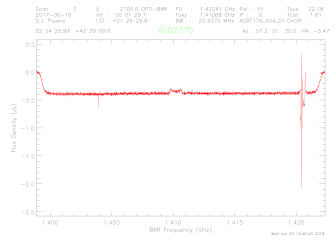
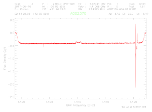

GBT
Remote Observing Training for UAT
June 19-21, 2019
GBTIDL Tutorial
To reduce and analyze spectral line data from the
GBT, we use a package called GBTIDL.
This contains a collection of programs that run in IDL, which is
generally available in Green Bank.
The package is fully documented at http://gbtidl.nrao.edu/.
For this activity, you will learn how to reduce
data using the observations that were made on Pisces-Perseus galaxies at the
last UAT workshop.
1.
Connecting to a data reduction machine.
a.
There are numerous machines in Green Bank
that you can use remotely to reduce your data. They are listed at the bottom of the
following webpage: http://www.gb.nrao.edu/pubcomputing/public.shtml.
b.
You will be doing reduction via a VNC
session, so you will need to set up a server on one of these machines. There are instructions on how to do this
for remote observing at: https://science.nrao.edu/facilities/gbt/observing/remote-observing-with-the-gbt. Here is a short
recap:
i. From
offsite, you will ssh to ssh.gb.nrao.edu (you can skip this command if you are in GB). Then you can ssh
to one of the data reduction machines, for this example I will use planck (replace
this with the actual machine name if on a different machine).
ii. On
planck, at
the prompt (>) type:
>
vncserver –geometry AxB
where A and B are the
number of pixels in the desktop you are creating; they should be less than the
number on your monitor. Note the
number, N, of the VNC session that was created. The first time you do this, you will
need to create a vnc password. This should be different from your
account password as you may want to share this with other people.
iii. You
can then logoff of both planck
and ssh.gb.nrao.edu.
iv. If
you are offsite, type the following command from a Terminal window: > ssh -L 590N:planck.gb.nrao.edu:590N
username@ssh.gb.nrao.edu. This sets
up a ssh tunnel allowing you to connect to a VNC
session on a machine that you cannot directly access offsite. If you are onsite, you can skip this
step.
c.
Once you have your VNC session started and
your ssh tunnel setup (if needed), you can use a VNC
viewer on your computer. If you
have a ssh tunnel, you will connect to:
localhost:590N. If you do not, then
you would connect to: plack:590N.
2.
You now should have a desktop that looks
something like this:

You can interact with this window just like you
would on any Linux desktop. If you
lose your connection, this window and all its processes will continue to
run. Therefore, when you are done
with your work, you should login to planck and type > vncserver -kill :N. This will terminate your VNC session and all
processes running in it. It is particularly important to exit IDL
when not using it as there are a limited number of IDL licenses available in
Green Bank.
3.
There are three ways to find your
data.
a.
When looking at data during observing, you
can type > online from within GBTIDL.
b.
For recent data this can be found in:
/home/gbtdata.
For our data, we will find it at /home/archive/science-data/17A/AGBT17A_404_01. To get these data into your local
directory in the right format, type: > sdfits path (where path is the directory where your data is). For storing large data files, you will
want a directory on the scratch disk.
Email helpdesk@gb.nrao.edu to request one
(when needed).
c.
The second (easier) way to access your data
is within GBTIDL using the command:
> offline,'AGBTX_Y_Z' where X is the semester (17A), Y is
the project code (404), and Z is the observing session (01). This method only works for recent
observations. We will not do this here.
4.
To run GBTIDL, at the system prompt
type: > gbtidl
5.
You will then need to load your data
file. If you used option one above,
just type: > filein,
filename where filename is
the full path of the file you created with sdfits. Alternatively you can leave off the filename
and navigate to your file via a GUI.
For this work, type: >
filein,'/home/scratch/dpisano/GBT17A-404/AGBT17A_404_01.raw.vegas'
6.
At this point you can type > summary to
see a listing off all the scans from your observation. There are three types of scans in this
observation:
a.
Observations of a known flux calibrator:
3C48 in this case.
b.
Observations of known HI sources, these
allow us to confirm that our data reduction is yielding results consistent with
past work.
c.
Observations of unknown HI sources. These are for doing science.
7.
The first step is to determine the
appropriate flux scale. To do this,
we will use our flux calibrator to derive the temperature of our noise diode, Tcal, in both polarizations. You will type the following commands:
a.
> .compile
scalUtils
b.
> .compile
scal
c.
> createCalStruct
d.
We can then derive Tcal
using 3C48 with the following commands:
i. >scal,1,2,tau=[0.01],ap_eff=0.657,plnum=0
(for YY pol)
ii. >scal,1,2,tau=[0.01],ap_eff=0.657,plnum=1
(for XX pol)
iii. The
second number printed out when running scal is Tcal for that polarization
averaged over the entire bandwidth.
We can check that this looks reasonable by typing: > plotCalDB. This
will plot Tcal for every channel and print out the
average Tcal values. You should get a result for plnum=0,1 of Tcal=1.61,1.65
(respectively). Check if you get a
similar result for scans 75, 76.
You will want to use the values from the latter two scans.
e.
Now we can calibrate and reduce the data
for each of the galaxies. For
starters, pick one. I will use the
first of the known HI sources:
i. getps,3,tau=0.01,ap_eff=0.657,units='Jy',tcal=1.61,plnum=0 (you will want to change the italicized numbers to
match the values you derived/chose).
You should get something that looks like this:

ii. If
this looks good, type > accum.
iii. Then
repeat for plnum=1 with the appropriate tcal value. If
this is also good, type > accum.
iv. Now
type: > ave to get the average of the two
polarizations. You should see "Pol:
I" printed in the header now, and something that looks like this:

v. This
spectrum needs to be baselined. You
would start by using setregion,
where you will have you click on the line-free regions for subtracting the
baseline. You could also set the
region by hand using nregion.
You should next choose a baseline order with the command: > nfit,1 where 1 is the order. The baseline
command will then subtract the baseline.
vi. Congratulations
you now have a calibrated HI spectrum of a galaxy!
f.
There are a number of additional things you
can do with your spectrum now.
i. You
can zoom in on the galaxy by using the mouse and cursor to select a region or
manually setting the x and y ranges with setx and sety (using the current units on
the plotter).
ii. You
can switch the units on the x-axis with freq, chan, or velo. Or you can
use the drop-down menu on the plotter.
iii. To
measure the noise in your spectrum you can use stats.
iv. To
smooth your data, you can use boxcar
or gsmooth.
g.
When you are happy with your results, you
can save your spectrum in one of 3 ways:
i. Create
an output file using > fileout,outputfile followed by > keep.
ii. You
can save the plotter output using > write_ps,psfile
iii. Or
you can output the spectrum as a text file using > write_ascii,textfile.
Try this for a few galaxies. Good luck!